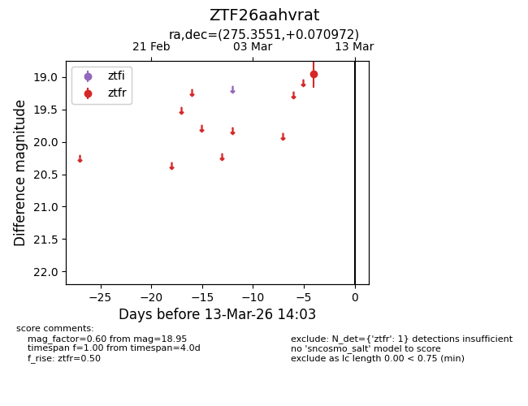
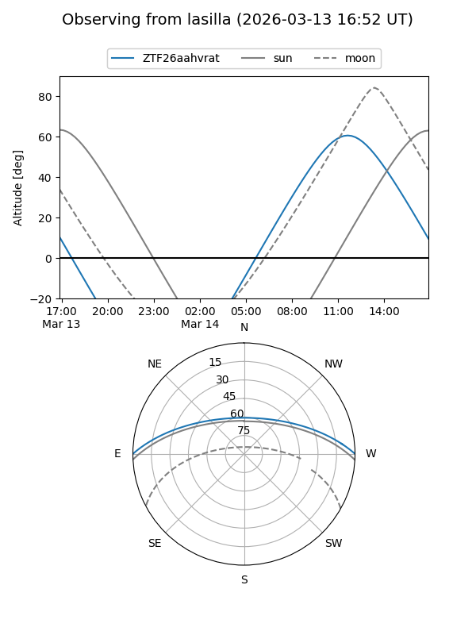
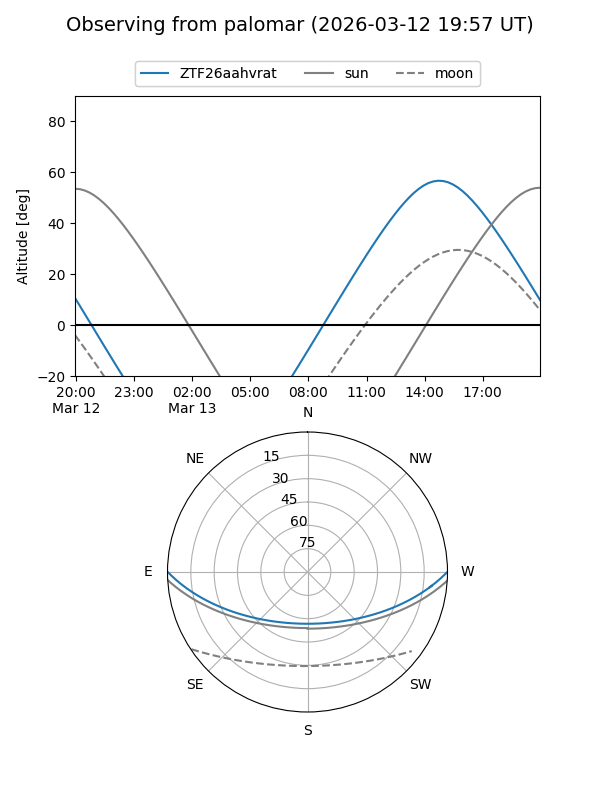

ZTF26aahvrat
Target ZTF26aahvrat at 2026-03-13 14:05
Aliases and brokers:
FINK: link
Lasair: link
ALeRCE: link
alt names
ZTF26aahvrat (ztf,fink_ztf)
Coordinates:
equatorial (ra, dec) = 275.3551,+0.07097
equatorial (HMS+DMS) = 18:21:25.22,+00:04:15.50
galactic (l, b) = (29.5580,+6.70741)
Flags:
Photometry:
last ztfr=18.95
1 ztfr detections
Lightcurve

Visibility


Additional plots